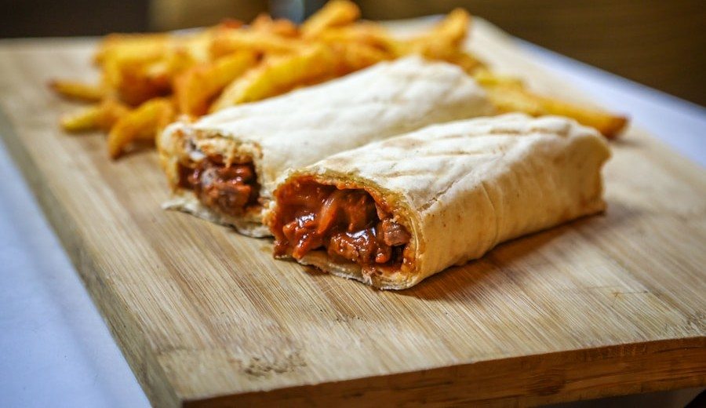

Bns Bilişim
QR'ı Okut, Dijital Menüyü Keşfet

HIZLI, ŞIK, KOLAY YÖNETİLEBİLİR
Bns Bilişim'den İşletmenize
Bu sayfa, Bns Bilişim'in restoranlar ve kafeler için kurduğu dijital QR menü sisteminin canlı bir örneğidir. Kategoriler, ürün fotoğrafları ve fiyatlar; kod yazmadan, panelden birkaç dakikada güncellenir.
BİZE DAİR
Bns Bilişim; restoranlar, salonlar ve küçük işletmeler için özel yazılım, dijital menü ve otomasyon çözümleri geliştiren bir teknoloji stüdyosu. Bu demo, işletmene nasıl bir dijital menü kurabileceğimizi göstermek için hazırlandı.
Bns Bilişim
© Bns Bilişim